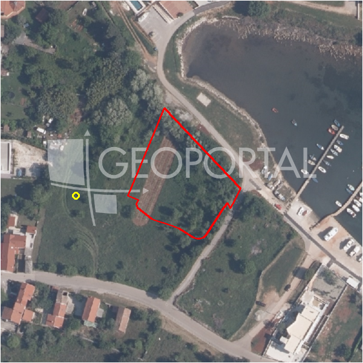

#39195 · Odlično građevinsko zemljište u Pomeru
Pomer, Medulin, Istarska · zemljiste · njuskalo · status active · oglas ↗
Ocjena
- Score
- 59 rule 59 · LLM – · 12.09.2026.
- RLV
- 547.000 € (229 €/m²) · ratio 1,16
- Ukupna investicija
- 5,2 M€
- GBP
- 1.913 m²
- Feedback
- –
- CRM
- –
Oglas
- Cijena
- 470.800 € (200 €/m²)
- Površina
- 2.354 m² · DKP 2.391 m² (odstupanje 1,6 %)
- Prodavatelj
- agencija · DIAMOND REAL ESTATE d.o.o.
- Prvi put
- 11.09.2026. · zadnje 11.09.2026. · 0 d na tržištu
Povijest cijene
| Datum | Cijena |
|---|---|
| 11.09.2026. | 470.800 € |
Flagovi
zop_70_100 ZOP pojas 70/100 m (−10)zone_uncertainty zona nije pregledana (reviewed: false) (−5)
llm_pending LLM ekstrakcija/ocjena nedostupna
Komponente score-a
| rlv | {'gbp': 1912.6080000000002, 'kis': 0.8, 'nkp': 1434.4560000000001, 'noi': None, 'rlv': 546652.471304348, 'ratio': 1.1611140002216398, 'value': None, 'phases': 1, 'profile': 'obala_visestambeno', 'gdv_neto': 6311606.4, 'cost_soft': 191260.80000000005, 'gdv_bruto': 7889508.000000001, 'kis_known': False, 'total_inv': 5204063.68, 'cost_build': 3825216.0000000005, 'cost_other': 688538.8800000001, 'cost_sales': 236685.24000000002, 'demolition': False, 'gbp_source': 'kis', 'rlv_per_m2': 228.65217391304353, 'parcel_area': 2390.76, 'parcelation': False, 'roi_on_cost': 0.16734181853823887, 'profit_at_ask': 870857.4799999995, 'cost_demolition': 0.0, 'total_inv_phase': 5204063.68, 'parcel_area_effective': 2390.76, 'sale_price_per_m2_nkp': 5500.0} |
| hard | [] |
| info | ['llm_pending'] |
| rubric | {'permits': {'max': 5.0, 'detail': {'permit': 'none'}, 'points': 0.0}, 'location': {'max': 15.0, 'detail': {'source': 'rlv.yaml:istra_ostalo/row1', 'sale_price_per_m2_nkp': 5500.0}, 'points': 11.5}, 'physical': {'max': 4.0, 'detail': {'slope_pct': 8.16, 'road_access': 'yes', 'slope_points': 2.0, 'sea_row1_bonus': True}, 'points': 4.0}, 'liquidity': {'max': 3.0, 'detail': {'n_cuts': 0, 'points_cut': 0.0, 'points_days': 0.008333333333333333, 'seller_type': 'agencija', 'points_fresh': 0.5, 'price_cut_pct': None, 'days_on_market': 1, 'points_private': 0}, 'points': 0.51}, 'rlv_ratio': {'max': 25.0, 'detail': {'rlv': 546652, 'ratio': 1.161, 'asking_price': 470800.0}, 'points': 18.22}, 'ticket_fit': {'max': 10.0, 'detail': {'asking_price': 470800.0}, 'points': 9.71}, 'zone_quality': {'max': 8.0, 'detail': {'reason': 'zona nepoznata', 'source': 'nepoznato', 'zone_class': None}, 'points': 2.0}, 'profit_potential': {'max': 20.0, 'detail': {'roi_on_cost': 0.167, 'profit_at_ask': 870857}, 'points': 18.97}, 'price_vs_benchmark': {'max': 10.0, 'detail': {'source': 'auto:Medulin', 'deviation': 0.335, 'ask_eur_m2': 200, 'benchmark_eur_m2': 300.7}, 'points': 9.35}} |
| weights | {'llm': 0.4, 'rule': 0.6, 'model': 0.0} |
| penalties | {'zop_70_100': 10, 'zone_uncertainty': 5} |
| raw_score | 74,3 |
| rlv_notes | [] |
| flag_notes | {'max_gbp': 1913, 'zop_band': '70', 'total_inv': 5204064, 'zone_code': None, 'zone_class': None, 'zone_source': 'nepoznato', 'zone_reviewed': None} |
| caps_applied | [] |
GIS
- Čestica
- k.o. 324221, k.č. 218/1 (pin_buffer, 0,79); k.o. 324221, k.č. 1237/1 (pin_buffer, 0,74); k.o. 324221, k.č. 248 (pin_buffer, 0,54)
- Zona
- – (–)
- kig / kis / katnost
- – / – / –
- GP / UPU
- – · UPU –
- Pristup / nagib
- yes · 8,2 % (max 14,7 %)
- More
- 6 m · red 1 · ZOP 70
- Zaštite
- Natura ne · zaštićeno ne · kulturno dobro ne
- Zgrade na čestici
- 0 %
- Match
- 0,79
Karta
Ortofoto (DOF)

RLV kalkulacija — pretpostavke
| gbp | {'value': 1912.6080000000002, 'source': 'kis'} |
| kis | {'value': 0.8, 'source': 'default_profila'} |
| sea_row | {'value': '1', 'source': 'gis'} |
| soft_pct | {'value': 0.05, 'source': 'profil'} |
| nkp_ratio | {'value': 0.75, 'source': 'profil'} |
| cost_other | {'value': 688538.8800000001, 'source': 'profil: doprinosi+uređenje po m² GBP, financiranje+rezerva % gradnje'} |
| parcel_area | {'value': 2390.76, 'source': 'dkp'} |
| asking_price | {'value': 470800.0, 'source': 'oglas'} |
| margin_on_cost | {'value': 0.15, 'source': 'profil'} |
| build_cost_per_m2_gbp | {'value': 2000.0, 'source': 'profil'} |
| sale_price_per_m2_nkp | {'value': 5500.0, 'source': 'rlv.yaml:istra_ostalo/row1'} |
| transfer_tax_and_acquisition | {'value': 0.06, 'source': 'profil'} |
Ekstrakcija iz oglasa
| access_road | yes |
| sea_distance_m_claim | 300.0 |
Benchmarks mikrolokacije
| Vrsta | Vrijednost | n | Od | Izvor |
|---|---|---|---|---|
| land_ask_eur_m2 | 301 | 199 | 11.09.2026. | auto |
Opis oglasa
Pomer, Istra U naselju Pomer, poznatom po ugodnom mediteranskom okruženju i blizini svih potrebnih sadržaja, prodaje se građevinsko zemljište. Ova sve traženija lokacija ističe se uređenom infrastrukturom i odličnom prometnom povezanošću, što je čini privlačnom za život i investicije. Parcela je pravilnog kvadratnog oblika, potpuno raskrčena, uredna i redovito održavana, s osiguranim pristupnim putem, udaljena 300m od mora. Na zemljištu je moguće graditi obiteljske kuće za privatne potrebe ili planirati izgradnju višestambenih objekata, čime nekretnina pruža izvanrednu priliku privatnim kupcima i investitorima. Za sve dodatne informacije i dogovor oko razgledavanja, kontaktirajte nas! ID KOD AGENCIJE: 1051-67